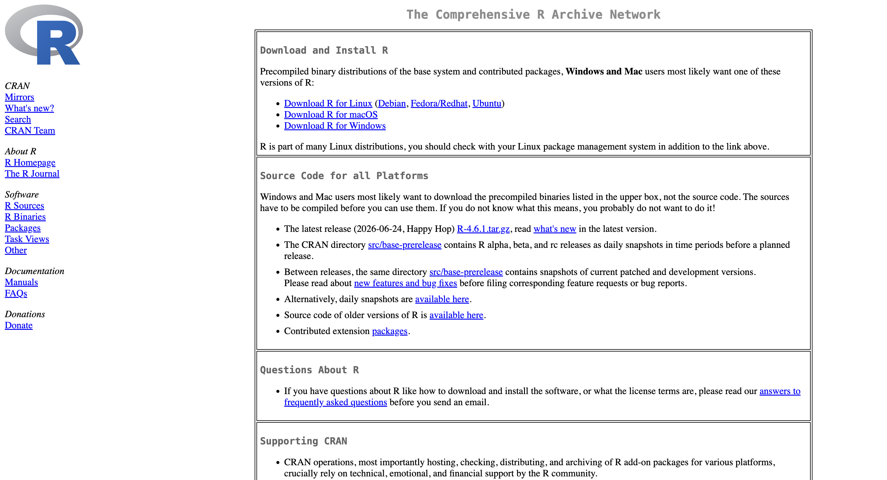
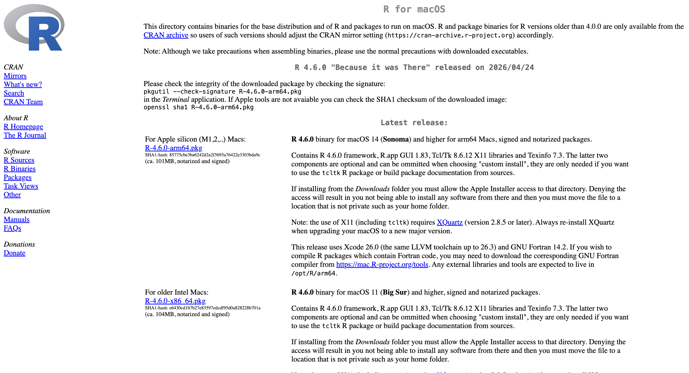
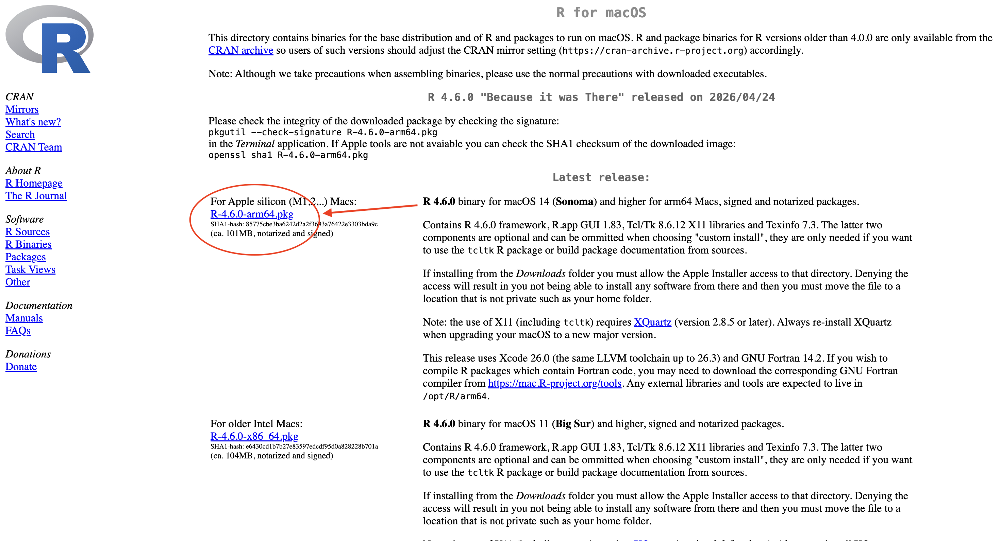
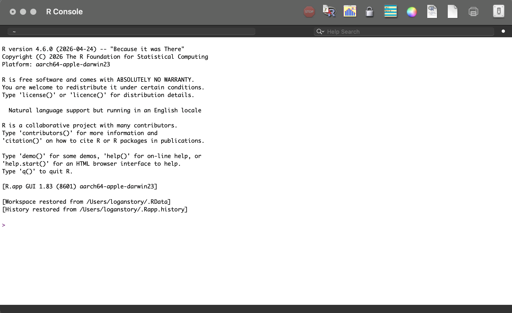
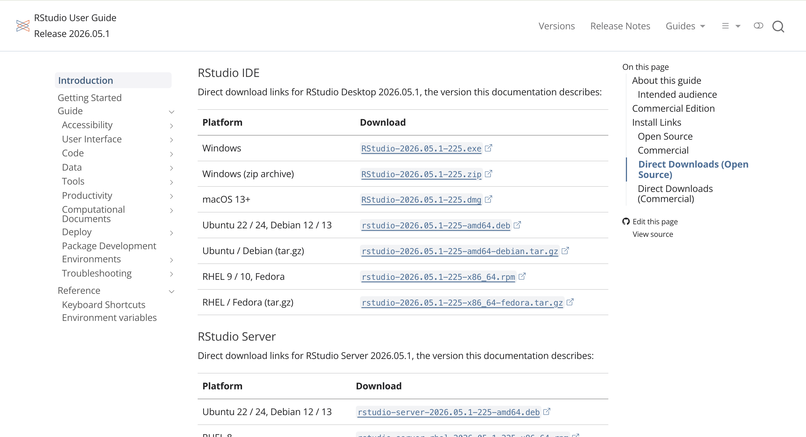
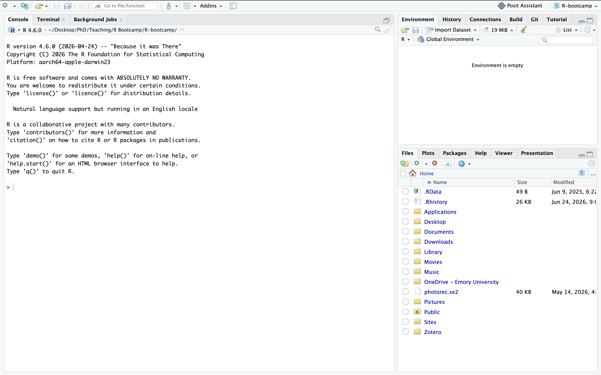

#Some fun code here to do something super coolR-bootcamp
Welcome to R Bootcamp for EVE 113-Coastal Marine Microbes!

Photo Credit: Stefan Andrews / Ocean Image Bank
R is an open source scripted programming language used for statistical analyses and graphical visualization of data. Because R is also an open source platform, it means that independent developers, researchers, and scientists alike have helped contribute to additional packages (or “add-ons”) that further extend the programs functionality. R is a valuable tool because it allows you to keep a detailed record of how you analyzed your data (which is vital for reproducibility). If you’d like to learn more about why reproducibility in research matters, you can read more here.
Course Design
This “course” was written and developed with the intrepid, undergraduate ecologist and/or marine biologist in mind. It makes use of real-world ecological questions using real-world ecological data. This bootcamp was also designed to meet a variety of experience levels for students enrolled in EVE 113. Some students may have zero experience using R. Others may be well versed in using the console, tidyverse and ggplot, but may be unfamiliar with things like vegan or unix. It’s possible this is your first time ever hearing of R (hopefully not the last), or it could be your hundredth. Either way, no matter the situation, this resource is meant to serve you! If there is a problem you’re hoping to tackle that is not included in this guide, please don’t hesitate to notify the TA or instructor and we can likely work to include it as a sub-tutorial.
Overall, our goal here is to:
Introduce students to the
Rprogramming language - specifically with ecological and biological data in mind.Introduce and learn how to code in the tidyverse (and all of its amazing sub-packages).
Introduce
unixfundamentals and provide an entry-level introduction to dealing with microbial data.Learn what the dada2 pipeline is and apply it to data you (the student) has collected.
Get excited about Coastal Marine Microbial Ecology!
This guide is setup like a website where we have our home/landing page (the page you’re on now), the About page, the Tutorial pages, and Sub-Tutorials. You can navigate between each of these by simply heading to the top of the web browser you’re on and clicking the hyper linked sections. This home page won’t contain more than a general overview of the bootcamp, how to download the tools you will need to complete the tutorials, and information for further “R education” beyond this resource.
Your learning here will be a product of the amount of time you spend engaging with the material, practicing your skills, and asking questions when you have them.
Tutorials “Tutorial”
I’ve tried to make this experience as learner-friendly as possible. As you work through the tutorials, you might encounter some things that don’t make sense at first, or might not understand their intention at first glance. Below is a basic overview of how most tutorials will be formatted:
A series of bullet pointed or numbered learning objectives for that specific tutorial.
There might more than one learning objective, or possibly none at all.
The hope is that, through the content in the tutorial, you will covered all of the learning objectives.
Then, I might include some text about the data set or packages we’re using. I’ll always make an effort to cite information, packages, or resources where applicable. If you’re curious, or if you’re writing up a report where you used any of the packages, software, or resources cited throughout the tutorials, I’ll also include a full bibliography at the very end of the document for your viewing pleasure. Please make sure you’re citing the necessary software you’re using in your work (giving credit where credit is due is very important to avoid plagiarism and promote reproducibility)!
Now, as we actually learn how to code, there will be real code “chunks” included in the tutorials. They look like this:
Even more fun code hereWe’ll be using two main languages in this course: R and unix (or bash, which is the text interface that actually lets you use unix commands). R is done in the console. unix is done in the Terminal. I will point out where those are later on, and the fundamental differences between the two. Note that above, I’ve actually used two different code chunks. One of them is unix and one of them is R. Here, you actually can’t (visually) tell the difference between the two. However, I will be very clear about what type of code chunk you should be using by doing something like this:
R
#more code here
unix
more code hereWe’ll get into why I’m using the # in my R code chunks during Tutorial 1. However, I’ll only do this when we’re working between the Terminal and the Console during the later tutorials. I will make it clear at the start of every tutorial whether you will be using R in the Console or using unix in the Terminal.
Sometimes, we might also use an external application for Quality Control or some other reason. If that’s the case, I’ll link the external application and give you directions on how to access that information like this.

I’ll try to include some fun graphic so you know where that hyper link is taking you, like the one above (we will learn about QIIME in Tutorial XX).
At the end of every tutorial, I will give you some DIYs to test the learning objectives from the beginning of the tutorial. These aren’t for a grade, but you can turn them in to me for feedback on your work (if you’d like any). Otherwise, they are only there for your learning and skill building.
Please Note: Answer keys to the questions will only be available if you come to office hours or submit your DIYs to your TA (me) for feedback.
How to Download R and RStudio
In this course, we will be conducting our work in a free software interface application known as RStudio. RStudio is a user-friendly IDE (intergrated development environment) where you can access both the Console and the Terminal (we will talk about what both of those means later). R and RStudio work with any operating system you have on hand, whether that be Windows, Apple (macOS), or Linux. Although, if you’re operating on Linux, I might just assume you already have R downloaded in some capacity.
Either way, to get started, you should probably go ahead and download R and RStudio onto your computer. (Again, did I mention that it’s free?) Let’s start with R first:
Visit this link here to get started with downloading R.
Once you open the webpage it should look something like the below image.

There’s a lot of hyperlinks here, so start by directing your attention to the first three links towards the top. Click on the associated “Download R for…” your current operating system. I’ll be doing this tutorial, and most other coding demonstrations in this bootcamp, using a macOS operating system. Windows and Mac don’t largely differ when using RStudio or R, but if you find yourself confused, don’t hesitate to ask me any questions you might have.
Once you hit download you will be redirected to another webpage, with even more links.

Click on the hyperlink that is associated with your current operating system. For most users, it should be the most up-to-date version of your internal operating system. For me, that’s currently macOS Sequoia 15.1.1, which means I would choose the blue hyperlink that says ‘R-4.6.0-arm64.pkg’.

Click that link, allow the R package to download onto your computer, then follow your computers prompts to download it onto your device. Once downloaded, if you open R, you’ll get a console environment that looks like this.

Great! You now have R installed. However, you’ll soon discover this is not the most user-friendly or flexible application to be doing the analyses or visualizations we’d like to do. Instead, we’re going to be using RStudio as our main interface for this course.
Visit this link here to download RStudio.
Again, you’ll be redirected to a website with a lot of hyperlinks. If you are at the top of the webpage where is says “RStudio IDE User Guide”, scroll down until you find the set of links pictured below:

Click the link that is associated with your operating system and allow the installer disk to download. Then, follow the instillation instructions when prompted by your computer.
Now, to make sure RStudio is correctly installed, go ahead and open the application for the first time. Your screen should look something like the below image (although your “File” window in the bottom right may appear different from mine).
Apple and macOS users: You may receive a warning from Apple security that confirms if you’d like to open the application for the first time. This is normal, and don’t be afraid to hit the “Open” button. If you followed the correct directions from the websites I’ve hyper linked in this guide, there will be no danger to your computer by opening the application. I pinky promise.

Congrats! You’ve now successfully downloaded and installed both R and RStudio onto your computer. This is a huge milestone in your learning as a scientist. Feel free to poke around and explore this interface if you’d like. This boot camp will cover a lot of the necessary elements we’ll be using in the course, but it’s always good to familiarize yourself with a new operating software if you can.
Beyond This Course…
Auker and Barthelmess, 2020 synthesize how important learning how to use R has become for Ecologists and Biologists just within the past decade. Relatively any job in this field nowadays likely requires some fundamental (or, occasionally, even advanced) knowledge of how to use R as a tool to analyze ecological data. Personally, I use R on a near daily basis; Between running statistical tests, plotting data, or sharing my workflow with collaborators, it’s become a vital skill in my tool set to leverage.
It’s true that learning a new programming language can, in simple terms, suck. However, being able to leverage these tools in your learning can be an invaluable skill both short- and long-term. I know in the age of Artificial Intelligence, learning something like this may seem like a fruitless task, but evidence has shown that AI actually isn’t all that great at helping you write code to analyze data (Becker et al., 2026). These researchers found that AI, in it’s current state as of February 2026, is roughly 20% slower than actual researchers at completing a coding or development task. At the task level, there may be some marginal benefits to utilizing a LLM like ChatGPT or Gemini to solve short-term code bugs, but not in the grand scheme of an entire project. You, the student scientist, are likely better at handling, parsing, and analyzing your own data – no matter how much a beginner you may think you are.
I implore you to give learning R a honest try before turning to AI to complete your assignments for you. Not only will you gain more hands-on understanding of the material, but you may also gain a renewed appreciation for the step-by-step process of working with your very own data for the first time. I am also happy to be a resource, if needed, to help troubleshoot. Things don’t always work as we intend them to; We may mistype a character here or there, possibly use the wrong command for something it’s not meant to actually do. These can be valuable parts of the learning experience, so best to let them happen and work through them before letting an AI assistant feed you an “out-of-the-box” solution that may or may not apply to your work.
If you’re excited about the prospect of learning more in R, there are a plethora of resources that exist out there that can teach you! I’d recommend the following places, to start:
If you find none of these fit your style, or don’t fit your learning needs, lets sit down and chat to find something better.
Happy coding!